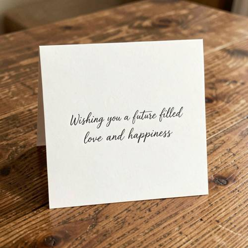
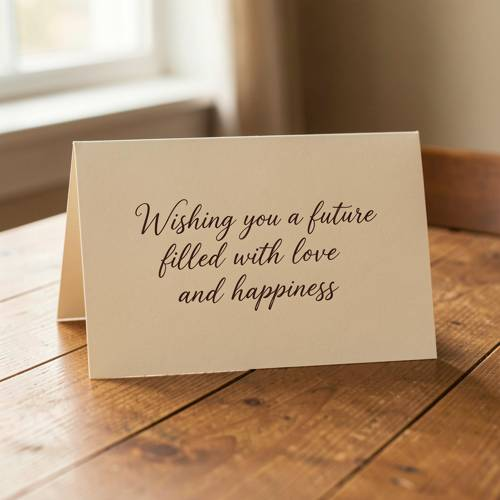

Text Generation — Please generate a picture: a simple greeting card placed on a wooden t
Please generate a picture: a simple greeting card placed on a wooden table with the words "Wishing you a future filled with love and happiness" written on the card in elegant handwriting.

Direct — one call, no iteration

Continuum — Qwen3.8-27B + FLUX.2-klein-9B
Judge — Direct
FAILText Generation — The text written on the card is "Wishing you a future filled love and happiness". This is an inaccurate generation of the requested text "Wishing you a future filled with love and happiness", as it omits the word "with".
Judge — Continuum
PASSText Generation — The image displays a greeting card with the exact text "Wishing you a future filled with love and happiness" written on it in a dark, elegant, cursive font. There are no spelling errors, omissions, or extra words.
What the agent did
Thinking
The user is asking for a greeting card on top of a wooden table, with the text "Wishing you a future filled with love and happiness" written in elegant handwriting. Let me generate this with flux2-klein (per the benchmark policy, use flux2-klein for both generation and editing). The text is long — multiple lines. The handwriting needs to be accurate. First, let me generate and then verify the text with inspect_region.
Model
I'll generate this greeting card scene with flux2-klein, then verify the handwriting renders correctly.
Step 1 — `generate_image`
{
"model": "flux2-klein",
"prompt": "A simple elegant cream-colored greeting card lying flat on a warm wooden table, card propped slightly open. Written on the card in elegant flowing cursive handwriting in dark ink: \"Wishing you a future filled with love and happiness\". Soft natural window light, shallow depth of field, cozy warm tones, photorealistic.",
"width": 1024,
"height": 1024
}
Result img_0
Thinking
The image is very good. Let me check the text carefully. The card displays "Wishing you a future / filled with love / and happiness" in elegant cursive. Let me zoom in on the text to confirm that each character is correct. Looking at the full image: "Wishing you a future filled with love and happiness" — this seems to be exactly as requested. To be sure, let me verify at full resolution.
Model
The first generation looks very close. Let me zoom into the handwriting to verify every word and letter is correct.
The enlarged crop clearly shows: "Wishing you a future filled with love and happiness" — all words, all letters, correct capitalization, elegant cursive handwriting. - "Wishing" — correct - "you" — correct - "a" — correct - "future" — correct - "filled" — correct - "with" — correct - "love" — correct - "and" — correct - "happiness" — correct The text is completely accurate. The scene: a simple cream-colored card on a wooden table, soft light, shallow depth of field. Everything the prompt asked for is present and correct. Let me mark this as the best and stop.
Model
The zoomed crop confirms the handwriting is exactly right: "Wishing you a future filled with love and happiness" — every word, letter, and the capital "W" are correct, rendered in elegant flowing cursive. The scene matches the request: a simple cream card standing on a warm wooden table with soft natural light and gentle depth of field. Everything in the prompt is present and correct, so I'll mark this as the final result.
Step 3 — `mark_best`
{
"image": "img_0",
"reason": "Greeting card on a wooden table with the full phrase \"Wishing you a future filled with love and happiness\" verified letter-by-letter in elegant cursive handwriting; soft lighting and composition match the request."
}
Thinking
Done. The marked image is the first generation (img_0), and that's exactly what I want to return. Since I haven't made any edits after marking, the mark is up to date.
Model
Done! The final image shows a simple cream greeting card standing on a rustic wooden table in soft window light, with the words "Wishing you a future filled with love and happiness" written in elegant dark-ink cursive across three lines. I verified the text at full resolution — every word and letter matches your requested phrase exactly.